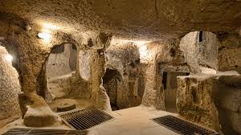
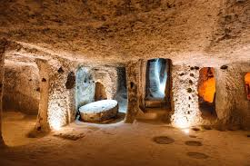

Descubren una Ciudad Subterránea Antigua Bajo las Calles de París
Fecha: 21 de febrero de 2025
Un equipo de arqueólogos y expertos en historia ha hecho un hallazgo asombroso bajo las calles de París: una ciudad subterránea que data de más de 3,000 años, mucho antes de la fundación de la propia ciudad. La excavación, realizada en un área cercana al distrito 6 de París, ha revelado una serie de túneles, estructuras y artefactos que podrían ofrecer una nueva perspectiva sobre las civilizaciones pre-romanas que habitaron la región. La ciudad parece haber sido un centro de comercio y cultura, con habitaciones subterráneas bien conservadas que sugieren una sociedad sofisticada. Los investigadores han descubierto fragmentos de cerámica, herramientas de metal y sorprendentes detalles arquitectónicos, incluidos mosaicos que representan escenas de la vida cotidiana de la época. Entre los artefactos encontrados también destacan objetos rituales, lo que sugiere que esta civilización ya practicaba formas avanzadas de religiosidad y ceremonias.
"Este es un hallazgo único que podría cambiar la forma en que entendemos la historia temprana de Europa", comentó Dr. Jean-Michel Lambert, uno de los arqueólogos principales de la expedición. "La ciudad subterránea parece haber estado en uso mucho antes de lo que pensábamos, y lo que es aún más fascinante es que parece haber sido construida para resistir los elementos, lo que implica una comprensión avanzada de ingeniería."
La ciudad parece haber sido un centro de comercio y cultura, con habitaciones subterráneas bien conservadas que sugieren una sociedad sofisticada. Los investigadores han descubierto fragmentos de cerámica, herramientas de metal y sorprendentes detalles arquitectónicos, incluidos mosaicos que representan escenas de la vida cotidiana de la época. Entre los artefactos encontrados también destacan objetos rituales, lo que sugiere que esta civilización ya practicaba formas avanzadas de religiosidad y ceremonias.
Aunque el equipo aún está en las primeras fases de excavación, el tamaño y la complejidad del sitio sugieren que esta civilización podría haber sido mucho más extensa de lo que inicialmente se pensaba. El área descubierta hasta ahora es solo una pequeña fracción de lo que se cree que podría ser un sistema mucho más grande de túneles y estructuras subterráneas.
El hallazgo también ha generado preguntas sobre las influencias externas en esta civilización. Algunos expertos sugieren que los artefactos encontrados podrían indicar un contacto temprano con culturas mediterráneas, lo que abriría nuevas líneas de investigación sobre el intercambio cultural en la antigüedad.
Este descubrimiento ha atraído la atención internacional, y el gobierno francés ya ha comenzado a coordinar esfuerzos para proteger el sitio, así como para abrirlo a un futuro museo que podría convertir a París en un nuevo destino turístico de gran interés histórico.